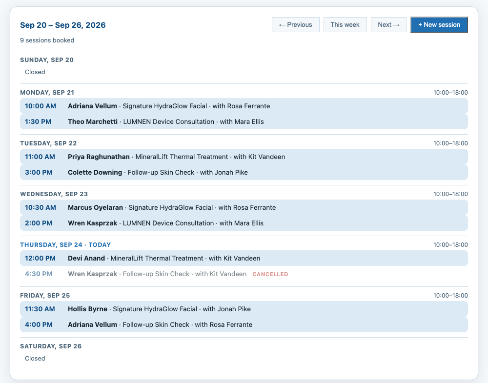
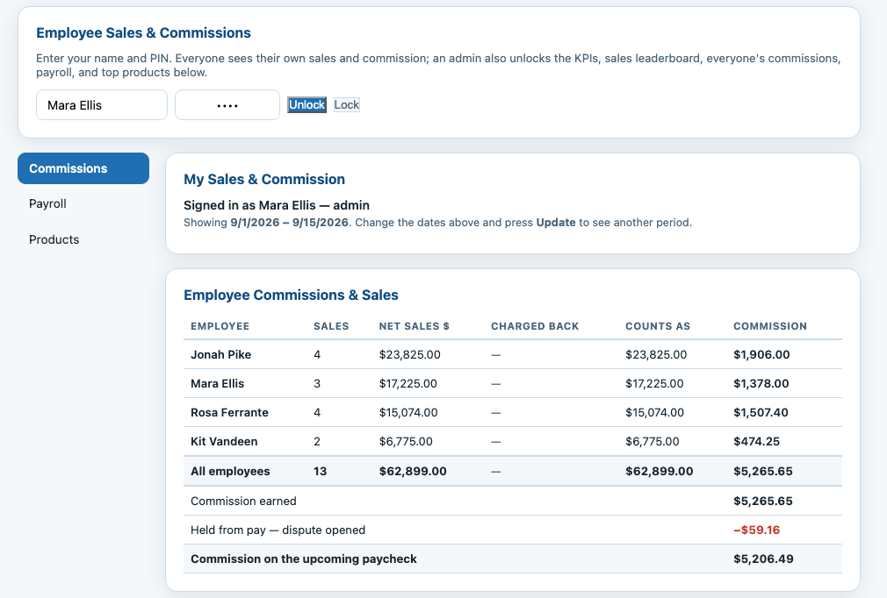

<title>SkySale</title>
<link rel="preconnect" href="https://fonts.googleapis.com">
<link rel="preconnect" href="https://fonts.gstatic.com" crossorigin>
<link rel="stylesheet" href="https://fonts.googleapis.com/css2?family=Newsreader:opsz,wght@6..72,400;6..72,500;6..72,600&family=IBM+Plex+Sans:wght@400;500;600&family=IBM+Plex+Mono:wght@400;500;600&display=swap">
<style>
  :root {
    /* Ledger palette: ink on paper, the register's own blue, and accounting's
       two semantic colours — money in, money back out. */
    --ink:        #10243A;
    --ink-soft:   #2C4257;
    --paper:      #FAFAF7;
    --paper-2:    #F1F0EA;
    --rule:       #D8D6CC;
    --slate:      #5A7183;
    --blue:       #1F6FB2;
    --blue-deep:  #0F4C81;
    --blue-wash:  #E7F0F8;
    --credit:     #1E6B4F;
    --debit:      #A8323C;
    --shadow:     0 1px 2px rgba(16,36,58,.06), 0 8px 24px -12px rgba(16,36,58,.18);

    --display: 'Newsreader', Georgia, 'Times New Roman', serif;
    --body: 'IBM Plex Sans', system-ui, -apple-system, 'Segoe UI', sans-serif;
    --mono: 'IBM Plex Mono', ui-monospace, 'SF Mono', Menlo, monospace;
  }

  @media (prefers-color-scheme: dark) {
    :root:not([data-theme="light"]) {
      --ink:        #ECEFF3;
      --ink-soft:   #B9C6D2;
      --paper:      #0D1822;
      --paper-2:    #142333;
      --rule:       #2A3C4E;
      --slate:      #8CA1B4;
      --blue:       #6FAEE0;
      --blue-deep:  #A8CDEC;
      --blue-wash:  #17293A;
      --credit:     #5FBE93;
      --debit:      #E4848D;
      --shadow:     0 1px 2px rgba(0,0,0,.4), 0 10px 28px -14px rgba(0,0,0,.7);
    }
  }
  :root[data-theme="dark"] {
    --ink:        #ECEFF3;
    --ink-soft:   #B9C6D2;
    --paper:      #0D1822;
    --paper-2:    #142333;
    --rule:       #2A3C4E;
    --slate:      #8CA1B4;
    --blue:       #6FAEE0;
    --blue-deep:  #A8CDEC;
    --blue-wash:  #17293A;
    --credit:     #5FBE93;
    --debit:      #E4848D;
    --shadow:     0 1px 2px rgba(0,0,0,.4), 0 10px 28px -14px rgba(0,0,0,.7);
  }

  * { box-sizing: border-box; }
  body {
    margin: 0;
    background: var(--paper);
    color: var(--ink);
    font-family: var(--body);
    font-size: 16px;
    line-height: 1.6;
    -webkit-font-smoothing: antialiased;
  }
  .wrap { max-width: 1060px; margin: 0 auto; padding-inline: 24px; }

  h1, h2, h3 { font-family: var(--display); font-weight: 500; text-wrap: balance; margin: 0; line-height: 1.15; }
  p { margin: 0; }
  a { color: inherit; }

  .eyebrow {
    font-family: var(--mono); font-size: .72rem; font-weight: 500;
    letter-spacing: .14em; text-transform: uppercase; color: var(--slate);
  }
  .lede { font-size: 1.12rem; color: var(--ink-soft); max-width: 62ch; }
  .num { font-family: var(--mono); font-variant-numeric: tabular-nums; }

  /* ── Masthead ─────────────────────────────────────────────────────── */
  header {
    border-bottom: 1px solid var(--rule);
    position: sticky; top: env(safe-area-inset-top, 0px);
    background: color-mix(in srgb, var(--paper) 92%, transparent);
    backdrop-filter: blur(8px); z-index: 10;
  }
  .masthead { display: flex; align-items: center; justify-content: space-between; gap: 16px; padding-block: 16px; }
  .logo { font-family: var(--display); font-size: 1.5rem; font-weight: 600; letter-spacing: -.01em; }
  .logo span { color: var(--blue); }
  nav { display: flex; gap: 26px; align-items: center; font-size: .92rem; }
  nav a { color: var(--ink-soft); text-decoration: none; }
  nav a:hover { color: var(--blue-deep); }
  @media (max-width: 720px) { nav .hide-sm { display: none; } }

  .btn {
    display: inline-block; font-family: var(--body); font-size: .95rem; font-weight: 600;
    padding: 12px 22px; border-radius: 4px; text-decoration: none; border: 1px solid transparent;
    transition: background .15s, color .15s;
  }
  .btn-solid { background: var(--blue-deep); color: #fff; }
  .btn-solid:hover { background: var(--blue); }
  .btn-line { border-color: var(--rule); color: var(--ink); background: transparent; }
  .btn-line:hover { border-color: var(--blue); color: var(--blue-deep); }
  :where(a, button):focus-visible { outline: 2px solid var(--blue); outline-offset: 3px; }

  /* ── Hero ─────────────────────────────────────────────────────────── */
  .hero { padding-block: 72px 64px; display: grid; grid-template-columns: 1.05fr .95fr; gap: 56px; align-items: start; }
  .hero h1 { font-size: clamp(2.3rem, 4.6vw, 3.4rem); letter-spacing: -.015em; margin-block: 14px 20px; }
  .hero h1 em { font-style: normal; color: var(--blue-deep); }
  .hero-cta { display: flex; gap: 12px; flex-wrap: wrap; margin-top: 28px; }
  .hero-note { margin-top: 18px; font-size: .88rem; color: var(--slate); }
  @media (max-width: 880px) { .hero { grid-template-columns: 1fr; gap: 40px; padding-block: 48px 44px; } }

  /* The paycheck. The most characteristic object in this software's world. */
  .cheque {
    background: var(--paper-2); border: 1px solid var(--rule); border-radius: 6px;
    box-shadow: var(--shadow); overflow: hidden;
  }
  .cheque-head {
    display: flex; justify-content: space-between; gap: 12px; flex-wrap: wrap;
    padding: 14px 20px; border-bottom: 1px solid var(--rule); background: var(--paper);
  }
  .cheque-head div { font-family: var(--mono); font-size: .7rem; letter-spacing: .1em; text-transform: uppercase; color: var(--slate); }
  .cheque-head b { display: block; font-family: var(--body); font-size: .92rem; letter-spacing: 0; text-transform: none; color: var(--ink); font-weight: 600; }
  .lines { padding: 6px 20px 14px; }
  .line { display: flex; justify-content: space-between; align-items: baseline; gap: 16px; padding-block: 9px; border-bottom: 1px solid var(--rule); }
  .line:last-of-type { border-bottom: 0; }
  .line-label { font-size: .9rem; color: var(--ink-soft); }
  .line-label small { display: block; font-size: .76rem; color: var(--slate); }
  .amt { font-family: var(--mono); font-variant-numeric: tabular-nums; font-size: .95rem; white-space: nowrap; }
  .amt.credit { color: var(--credit); }
  .amt.debit { color: var(--debit); }
  .cheque-total {
    display: flex; justify-content: space-between; align-items: baseline; gap: 16px;
    padding: 16px 20px; border-top: 2px solid var(--ink); background: var(--paper);
  }
  .cheque-total .amt { font-size: 1.35rem; font-weight: 600; }
  .cheque-cap { padding: 0 20px 16px; font-size: .76rem; color: var(--slate); background: var(--paper); }

  /* ── Sections ─────────────────────────────────────────────────────── */
  section { padding-block: 64px; border-top: 1px solid var(--rule); }
  .sec-head { max-width: 64ch; margin-bottom: 40px; }
  .sec-head h2 { font-size: clamp(1.7rem, 3vw, 2.2rem); margin-block: 12px 14px; letter-spacing: -.01em; }

  .pull { font-family: var(--display); font-size: clamp(1.35rem, 2.6vw, 1.9rem); line-height: 1.35; max-width: 26ch; }
  .pull-grid { display: grid; grid-template-columns: 1fr 1fr; gap: 48px; align-items: start; }
  @media (max-width: 880px) { .pull-grid { grid-template-columns: 1fr; gap: 28px; } }

  .modules { display: grid; grid-template-columns: repeat(auto-fit, minmax(270px, 1fr)); gap: 0 40px; }
  .module { padding-block: 24px; border-top: 1px solid var(--rule); }
  .module h3 { font-size: 1.16rem; margin-bottom: 8px; }
  .module p { font-size: .94rem; color: var(--ink-soft); }
  .module .eyebrow { display: block; margin-bottom: 10px; }

  /* The edge cases. A numbered list, because these are genuinely enumerable
     rules — not decoration. */
  .rules { display: grid; gap: 0; counter-reset: rule; }
  .rule-row {
    display: grid; grid-template-columns: 44px 1fr; gap: 18px;
    padding-block: 22px; border-top: 1px solid var(--rule); align-items: start;
  }
  .rule-row::before {
    counter-increment: rule; content: counter(rule, decimal-leading-zero);
    font-family: var(--mono); font-size: .8rem; color: var(--blue); padding-top: 3px;
  }
  .rule-row h3 { font-family: var(--body); font-size: 1rem; font-weight: 600; margin-bottom: 5px; }
  .rule-row p { font-size: .93rem; color: var(--ink-soft); max-width: 68ch; }

  /* Screens. Framed like a document rather than floated on a gradient — the
     point is to read the figures in them. */
  .shots { display: grid; gap: 44px; }
  figure { margin: 0; display: grid; gap: 14px; }
  figure img {
    width: 100%; max-width: 100%; display: block; height: auto;
    border: 1px solid var(--rule); border-radius: 6px; box-shadow: var(--shadow);
    background: var(--paper-2);
  }
  figcaption { font-size: .92rem; color: var(--ink-soft); max-width: 68ch; }
  figcaption b { font-weight: 600; color: var(--ink); }
  figcaption .demo {
    display: block; margin-top: 6px; font-family: var(--mono);
    font-size: .74rem; letter-spacing: .04em; color: var(--slate);
  }

  .facts { display: grid; grid-template-columns: repeat(auto-fit, minmax(180px, 1fr)); gap: 28px; margin-top: 8px; }
  .fact { border-left: 2px solid var(--blue); padding-left: 16px; }
  .fact b { display: block; font-family: var(--mono); font-size: 1.5rem; font-variant-numeric: tabular-nums; }
  .fact span { font-size: .88rem; color: var(--slate); }

  .cta-band { background: var(--ink); color: var(--paper); border-radius: 6px; padding: 44px; margin-block: 8px; }
  .cta-band h2 { color: var(--paper); font-size: clamp(1.6rem, 2.8vw, 2.1rem); }
  .cta-band p { color: color-mix(in srgb, var(--paper) 78%, var(--ink)); margin-block: 12px 26px; max-width: 54ch; }
  .cta-band .btn-solid { background: var(--paper); color: var(--ink); }
  .cta-band .btn-solid:hover { background: #fff; }
  .cta-band .btn-line { border-color: color-mix(in srgb, var(--paper) 40%, transparent); color: var(--paper); }
  .cta-band .btn-line:hover { border-color: var(--paper); color: var(--paper); }
  @media (max-width: 620px) { .cta-band { padding: 28px; } }

  footer { border-top: 1px solid var(--rule); padding-block: 32px 48px; font-size: .88rem; color: var(--slate); }
  .foot { display: flex; justify-content: space-between; gap: 16px; flex-wrap: wrap; align-items: baseline; }

  @media (prefers-reduced-motion: reduce) { * { transition: none !important; } }
</style>

<header>
  <div class="wrap masthead">
    <div class="logo">Sky<span>Sale</span></div>
    <nav>
      <a class="hide-sm" href="#what">What it does</a>
      <a class="hide-sm" href="#screens">See it</a>
      <a class="hide-sm" href="#rules">The hard parts</a>
      <a class="hide-sm" href="#who">Who it's for</a>
      <a class="btn btn-solid" href="#talk">Book a walkthrough</a>
    </nav>
  </div>
</header>

<main>
  <div class="wrap">
    <div class="hero">
      <div>
        <p class="eyebrow">Point of sale &amp; commission payroll</p>
        <h1>Any register can take the money. Ours can tell you <em>who earned it</em>.</h1>
        <p class="lede">
          SkySale is a point-of-sale and CRM built for high-ticket specialty retail —
          where one sale can be five figures, staff work across more than one shop,
          and a commission mistake is somebody's rent. It rings up the sale, then
          gets the paycheck behind it right.
        </p>
        <div class="hero-cta">
          <a class="btn btn-solid" href="#talk">Book a walkthrough</a>
          <a class="btn btn-line" href="#what">See what it does</a>
        </div>
        <p class="hero-note">Running two stores and a shared staff roster in Santa Fe, New Mexico, today.</p>
      </div>

      <div class="cheque">
        <div class="cheque-head">
          <div>Pay period<b>Sep 1 – Sep 15</b></div>
          <div>Payday<b>Oct 1</b></div>
          <div>Employee<b>Both stores</b></div>
        </div>
        <div class="lines">
          <div class="line">
            <span class="line-label">Net sales</span>
            <span class="amt credit">$48,210.00</span>
          </div>
          <div class="line">
            <span class="line-label">Return on receipt 1081<small>Sold in August — counted to August</small></span>
            <span class="amt debit">−$2,000.00</span>
          </div>
          <div class="line">
            <span class="line-label">Commission, 8%</span>
            <span class="amt">$3,696.80</span>
          </div>
          <div class="line">
            <span class="line-label">Dispute held, receipt 1104<small>Held, not lost — released if it's won</small></span>
            <span class="amt debit">−$216.38</span>
          </div>
          <div class="line">
            <span class="line-label">Carried from Sep 15<small>That cheque closed below zero</small></span>
            <span class="amt debit">−$84.12</span>
          </div>
        </div>
        <div class="cheque-total">
          <span class="line-label" style="font-weight:600;color:var(--ink)">Net pay</span>
          <span class="amt">$3,396.30</span>
        </div>
        <p class="cheque-cap">An example paycheck, not real payroll. Every line is one you can click through to the receipts behind it.</p>
      </div>
    </div>
  </div>

  <!-- ── The argument ──────────────────────────────────────────────── -->
  <section>
    <div class="wrap pull-grid">
      <p class="pull">
        Most registers stop at the sale. The hard part starts after it.
      </p>
      <div style="display:grid;gap:16px">
        <p class="lede">
          A device sells for $18,750. Two people split the sale. One of them works at
          both shops. Six weeks later the customer returns it — and the cheque that
          paid the commission has already gone out.
        </p>
        <p class="lede">
          That's an afternoon of spreadsheet work in most shops, and it's where the
          money quietly goes wrong. SkySale treats it as the main event: every figure
          on a paycheck traces back to the receipts that produced it, and every rule
          below is one the software already knows.
        </p>
      </div>
    </div>
  </section>

  <!-- ── What it does ──────────────────────────────────────────────── -->
  <section id="what">
    <div class="wrap">
      <div class="sec-head">
        <p class="eyebrow">What it does</p>
        <h2>One system from the card reader to the cheque.</h2>
        <p class="lede">Six parts, each of which most shops buy separately and reconcile by hand.</p>
      </div>

      <div class="modules">
        <div class="module">
          <span class="eyebrow">01 — Register</span>
          <h3>Sell, return, split the tender</h3>
          <p>
            Card, cash, cheque or a split across them. Credit a sale to more than one
            person with the percentages you choose. Card payments run through your
            own merchant account, and the receipt emails itself.
          </p>
        </div>
        <div class="module">
          <span class="eyebrow">02 — Customers</span>
          <h3>Every purchase, one record</h3>
          <p>
            Who bought what, when, from whom, and what they've spent across every
            visit. Search by anything you half-remember. Send one customer a welcome
            email built from what they actually bought, or write to a filtered group.
          </p>
        </div>
        <div class="module">
          <span class="eyebrow">03 — Commission &amp; payroll</span>
          <h3>Semi-monthly, in arrears, correct</h3>
          <p>
            Per-person plans, paid on your own schedule. Returns, disputes and
            shortfalls land on the right cheque without anyone chasing them. Staff see
            their own numbers; managers see everyone's.
          </p>
        </div>
        <div class="module">
          <span class="eyebrow">04 — Bookings</span>
          <h3>A calendar customers can use</h3>
          <p>
            Set your opening hours and treatment menu once. Book a session and the
            customer gets a confirmation they can reschedule or cancel themselves —
            from the email, without ringing the shop.
          </p>
        </div>
        <div class="module">
          <span class="eyebrow">05 — Reports</span>
          <h3>Figures you can open</h3>
          <p>
            Daily takings, top products, a live leaderboard, per-employee statements.
            Every total opens onto the transactions inside it, so a number you doubt
            takes one click to check rather than an afternoon to rebuild.
          </p>
        </div>
        <div class="module">
          <span class="eyebrow">06 — Reconciliation</span>
          <h3>Against the merchant's own batch</h3>
          <p>
            Match the day's card sales to what the processor actually settled, and see
            what didn't line up — declines, offsets, a refund with no sale behind it.
            Import your history from the POS you're leaving.
          </p>
        </div>
      </div>
    </div>
  </section>

  <!-- ── Screens ───────────────────────────────────────────────────── -->
  <section id="screens">
    <div class="wrap">
      <div class="sec-head">
        <p class="eyebrow">A look at it</p>
        <h2>No dashboard theatre. Screens you'd actually work in.</h2>
      </div>

      <div class="shots">
        <figure>
          
          <figcaption>
            <b>The week's book.</b> Sessions sit under the day they fall on, with the
            treatment and the specialist on each. Cancellations stay on the page
            struck through rather than vanishing, so the front desk can see what
            changed. A customer who reschedules from their email changes this page
            without anyone having to refresh it.
            <span class="demo">A demonstration store. The staff, customers and bookings are invented.</span>
          </figcaption>
        </figure>

        <figure>
          
          <figcaption>
            <b>What everyone is owed, and why.</b> Sales and commission per person
            for the period, then the two lines that make it a paycheck rather than a
            total: what was earned, and what is being held while a dispute is open.
            Staff enter their own name and PIN to see their own figures; an admin sees
            the whole roster.
            <span class="demo">A demonstration store. The staff, customers and figures are invented.</span>
          </figcaption>
        </figure>
      </div>
    </div>
  </section>

  <!-- ── The rules ─────────────────────────────────────────────────── -->
  <section id="rules">
    <div class="wrap">
      <div class="sec-head">
        <p class="eyebrow">The hard parts</p>
        <h2>The rules that cost you money when software ignores them.</h2>
        <p class="lede">
          These aren't settings to configure. They're how SkySale already behaves,
          because each one was a real mistake somebody paid for first.
        </p>
      </div>

      <div class="rules">
        <div class="rule-row">
          <div>
            <h3>A return counts against the day the item sold</h3>
            <p>
              Not the day the money went back. An August sale refunded in September
              belongs to August — so it comes off the commission it actually paid.
            </p>
          </div>
        </div>
        <div class="rule-row">
          <div>
            <h3>A return comes off the cheque that paid its sale</h3>
            <p>
              If that cheque is still open it simply reduces net sales. If it has
              already gone out, it becomes a deduction on the next one — once, and
              visibly.
            </p>
          </div>
        </div>
        <div class="rule-row">
          <div>
            <h3>A chargeback is held, not lost</h3>
            <p>
              Money in dispute is withheld from the open cheque and remembered, so it
              can't be taken twice. Win it and it's released; lose it and it stays
              gone. A human can mark one as already settled elsewhere.
            </p>
          </div>
        </div>
        <div class="rule-row">
          <div>
            <h3>A negative cheque carries forward</h3>
            <p>
              A cheque that lands below zero pays nothing, and the shortfall moves to
              the very next payday as a single carried line — not by repeating every
              deduction behind it and double-counting.
            </p>
          </div>
        </div>
        <div class="rule-row">
          <div>
            <h3>One person, one paycheck, across both shops</h3>
            <p>
              Staff who work at more than one location have one record per shop and
              one cheque. The shortfall is judged on the combined total, and marking
              them paid closes both.
            </p>
          </div>
        </div>
        <div class="rule-row">
          <div>
            <h3>The day ends when your shop closes</h3>
            <p>
              Not at midnight on a server in another timezone. Every report, pay
              period and leaderboard is read on your own clock — so the evening's
              sales are in the day you rang them up.
            </p>
          </div>
        </div>
      </div>
    </div>
  </section>

  <!-- ── Who ───────────────────────────────────────────────────────── -->
  <section id="who">
    <div class="wrap">
      <div class="sec-head">
        <p class="eyebrow">Who it's for</p>
        <h2>Shops where the average sale is large and the staff are shared.</h2>
        <p class="lede">
          Medical spas, skincare and wellness studios, device and equipment retailers —
          anywhere a commissioned team sells considered, high-value products, and
          getting their pay right matters more than shaving a second off checkout.
        </p>
      </div>
      <div class="facts">
        <div class="fact"><b>2</b><span>stores running on it today, with one shared roster</span></div>
        <div class="fact"><b>$18,750</b><span>largest single sale it handles, commissioned and tracked</span></div>
        <div class="fact"><b>3</b><span>roles — staff see their own figures, managers see everyone's</span></div>
        <div class="fact"><b>1st &amp; 15th</b><span>paydays, each covering the half-month that closed before it</span></div>
      </div>
    </div>
  </section>

  <!-- ── CTA ───────────────────────────────────────────────────────── -->
  <section id="talk" style="border-top:0">
    <div class="wrap">
      <div class="cta-band">
        <p class="eyebrow" style="color:color-mix(in srgb, var(--paper) 62%, var(--ink))">Get in touch</p>
        <h2>Bring us your messiest pay period.</h2>
        <p>
          The fastest way to see whether SkySale fits is to walk through a fortnight
          you've already run — returns, disputes, split sales and all — and see
          whether the numbers come out where you put them.
        </p>
        <div class="hero-cta" style="margin-top:0">
          <a class="btn btn-solid" href="mailto:skylerbaileyconsulting@gmail.com?subject=SkySale%20walkthrough">Email us</a>
          <a class="btn btn-line" href="mailto:skylerbaileyconsulting@gmail.com?subject=SkySale%20walkthrough">skylerbaileyconsulting@gmail.com</a>
        </div>
      </div>
    </div>
  </section>
</main>

<footer>
  <div class="wrap foot">
    <div><span class="logo" style="font-size:1.1rem">Sky<span>Sale</span></span> &nbsp;·&nbsp; Point of sale &amp; commission payroll</div>
    <div>Santa Fe, New Mexico &nbsp;·&nbsp; <a href="mailto:skylerbaileyconsulting@gmail.com" style="color:var(--blue-deep)">skylerbaileyconsulting@gmail.com</a></div>
  </div>
</footer>
